Restoration of the Tobacco Warehouse
This thesis focuses on the restoration and reuse of a tobacco warehouse in the city of Xanthi.
It is divided into four sections: a historical overview of the tobacco industry in Xanthi and an analysis of the city's urban fabric; documentation of the warehouse through photogrammetry and architectural drawings; an analysis of its current condition, materials, construction methods and preservation status; and a proposal to repurpose the building as a digital library and reading room.
The tobacco warehouse, located in the centre of Xanthi, is a small rectangular building (10.50 m × 27 m) used primarily for tobacco storage. Despite being a single structure, it functioned as two separate spaces, indicated by dual entrances and an internal partition wall. In 2011, it was designated a heritage monument.
Urban context
The warehouse sits in the dense urban fabric of central Xanthi. Its simple, symmetrical façades feature wooden windows with iron bars, stone staircases and skylights. The original dual-pitched wooden roof is no longer intact, leaving only the perimeter walls and partition.
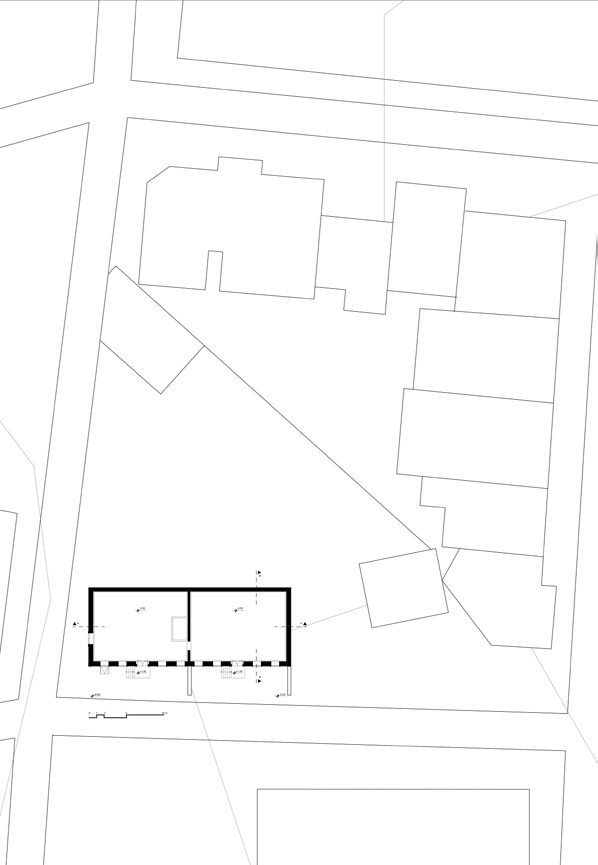
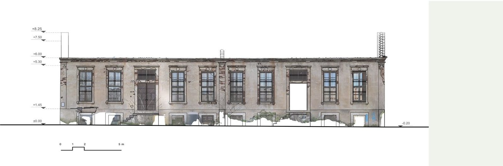
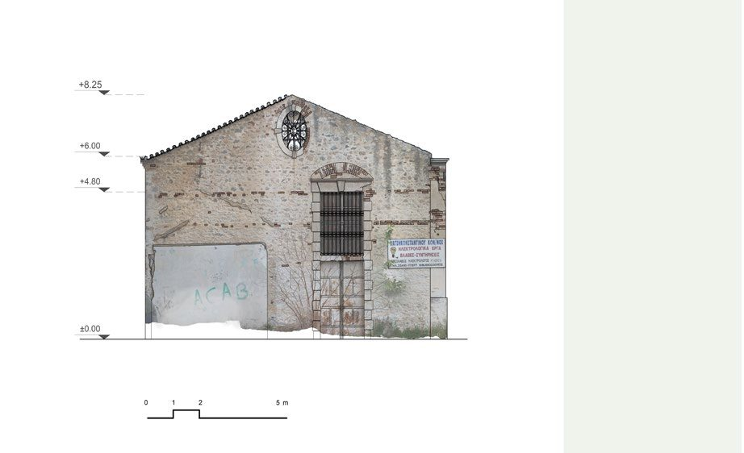
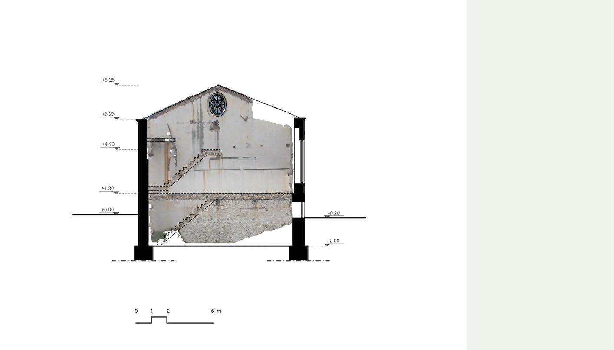
Damage analysis
The current condition of the building is documented and classified through a damage-mapping legend. The western and southern façades, as well as the interior walls, are coated with lime plaster featuring drawn ornamentation over a brick substrate.
Identified damage includes loss of original door, moisture ingress, loss or damage of glazing, staining due to metal oxidation, oxidation of metallic elements, vegetation growth, vandalism and graffiti, peeling and bulging plaster, and loss of stone-masonry surface.
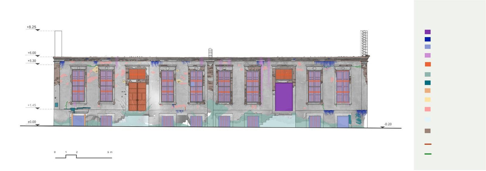
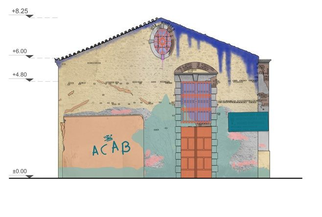
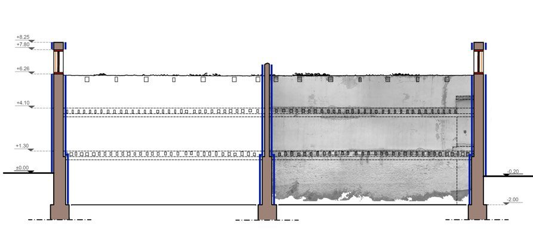
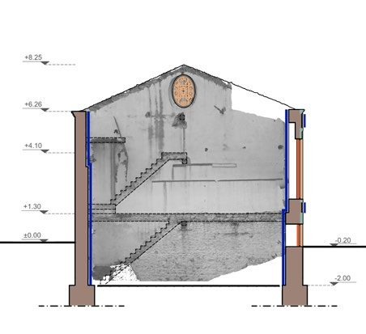
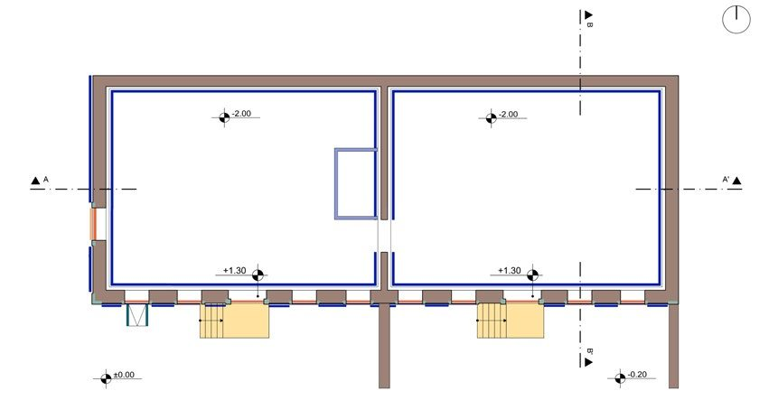
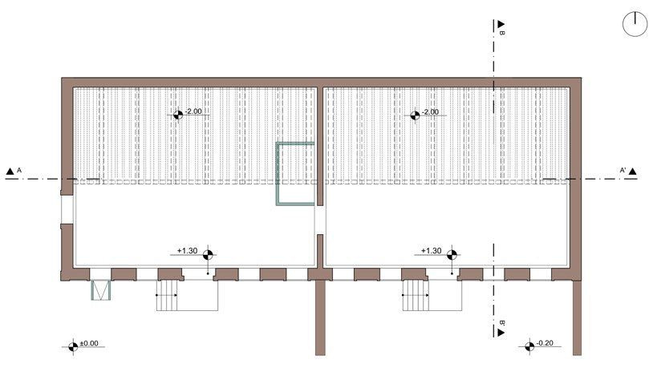
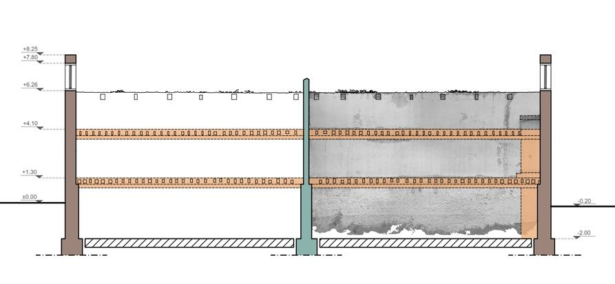
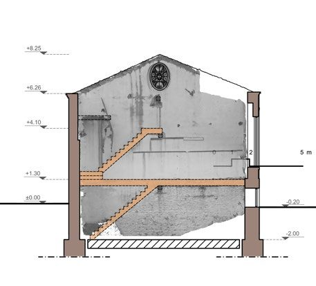
Restoration and Adaptive Reuse Proposal
Research revealed that the local community undervalues the cultural significance of the tobacco warehouses, resulting in inadequate preservation efforts. This realization inspired the thesis, aimed at revitalizing a historic warehouse to enrich the area's cultural fabric and educational legacy.
The proposal for a Digital Library and Reading Room emerged from the need for infrastructure to support Xanthi's university students. Libraries, often designed to blend organically with their surroundings, have evolved alongside electronic media — adapting and embracing digital functions while maintaining their role as cultural landmarks.
Roof replacement: the old wooden trusses and Byzantine tiles are replaced with a glass roof, raised by 80 cm to ensure sufficient height for the upper floor and covered with two movable shading panels supported by metal frames. The main entrance is located on the southern façade at +1.30 m, with the reception and waiting area on the left and the stairwell on the right.
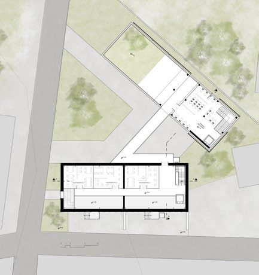
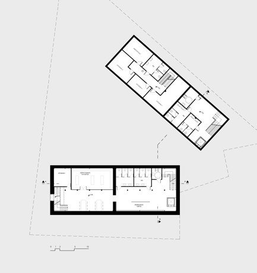
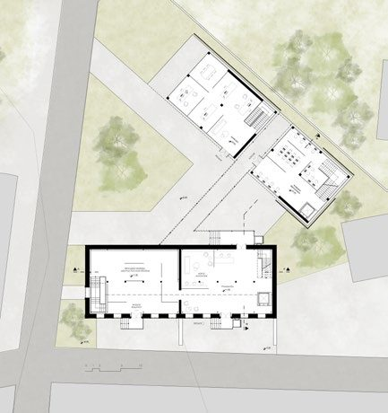
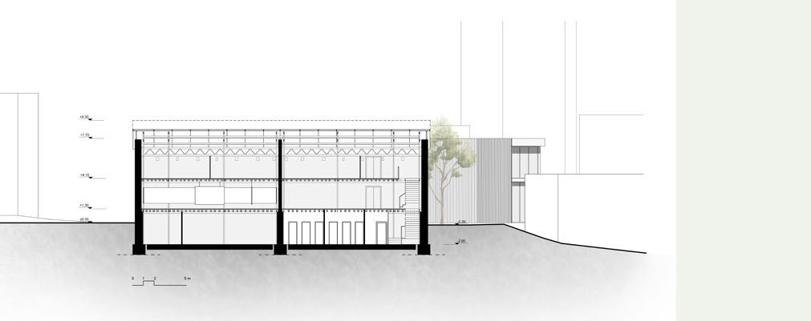
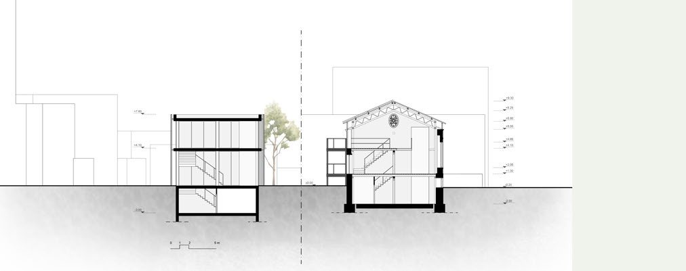
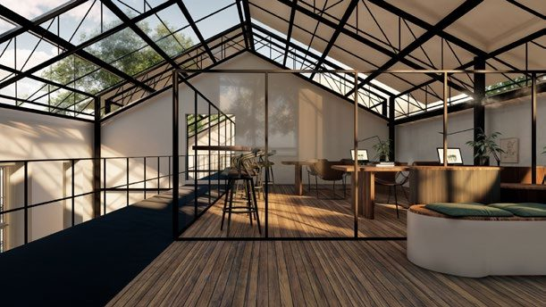
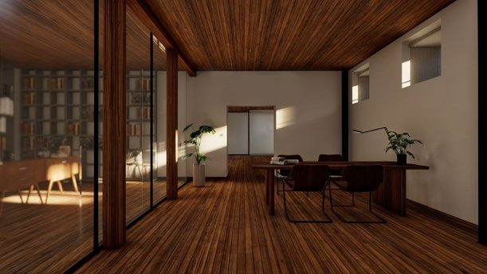
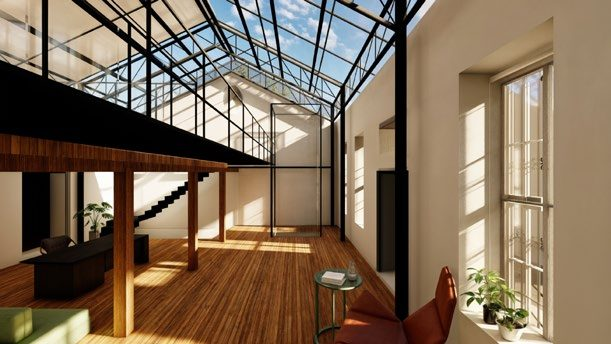
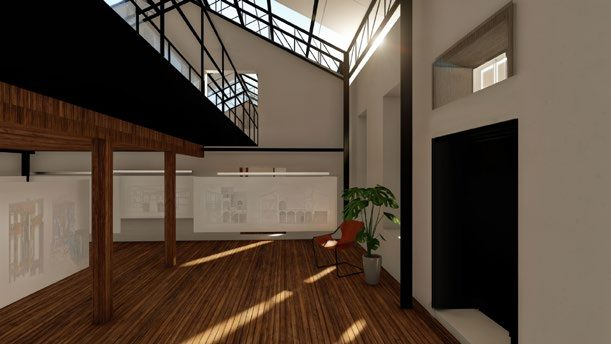
New Building Addition
Two new openings in the northern façade — at +1.30 m and +4.10 m — connect the warehouse with the surrounding area and the new building via a metal bridge. The new building consists of two volumes: a ground floor and a two-storey structure, designed in harmony with the warehouse.
The ground-floor volume houses administration offices and a meeting room. The two-storey volume houses the digital library and reading room on both floors. A metal bridge bisects the two new buildings and connects them. The façades of the new buildings are simple, using vertical blinds for controlled shading.
A shared basement between the two new volumes contains storage, restrooms for administration and visitors, and a boiler room.
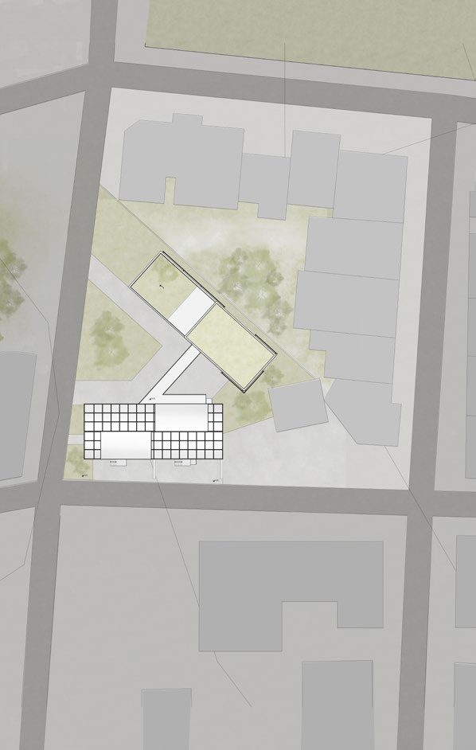
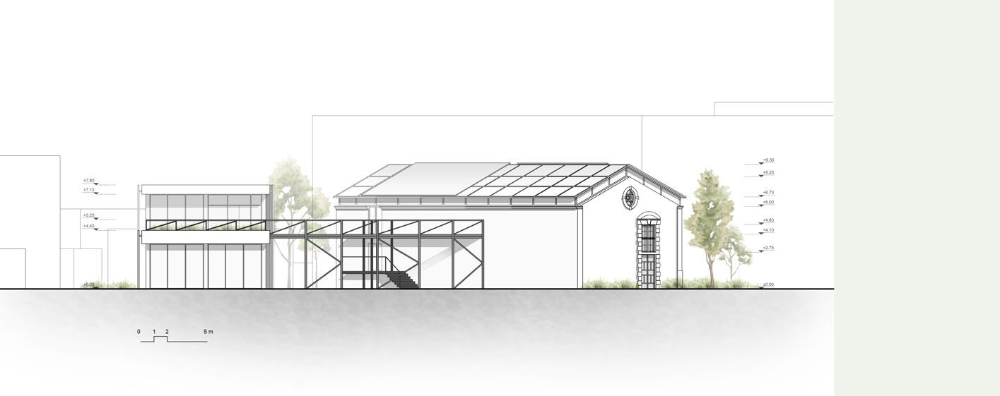
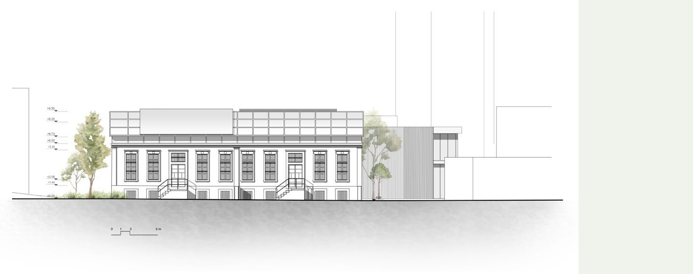
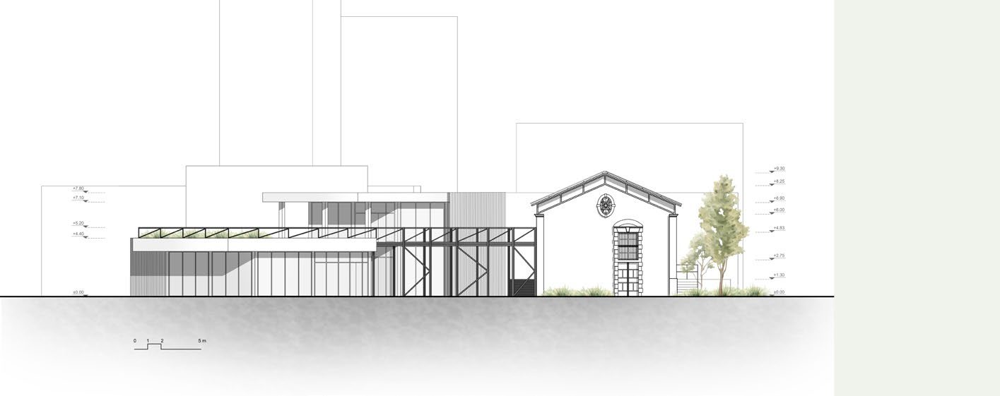
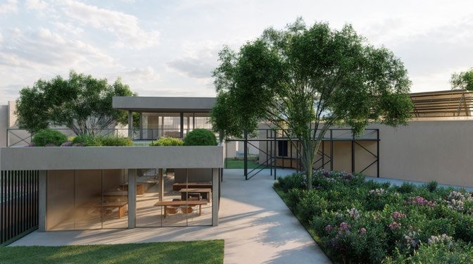
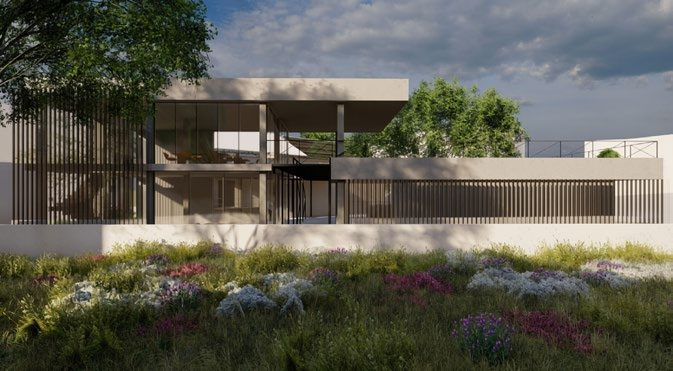